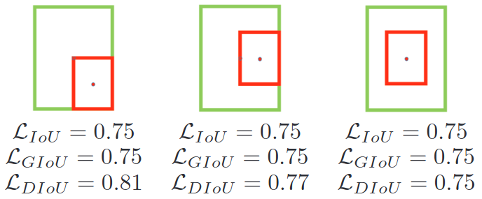
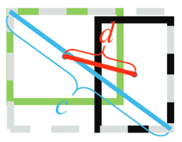
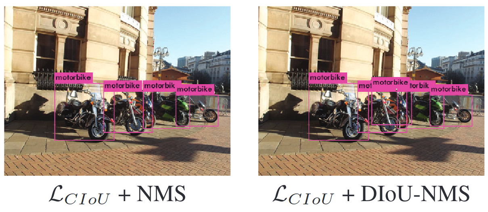
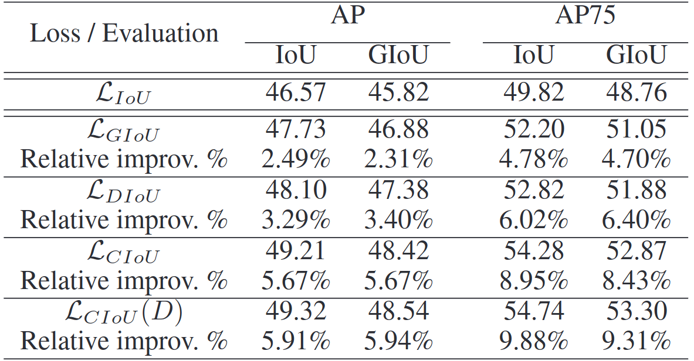
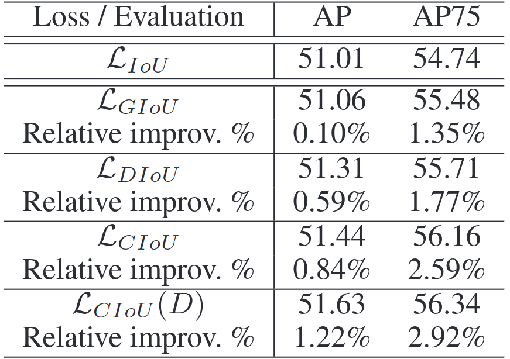
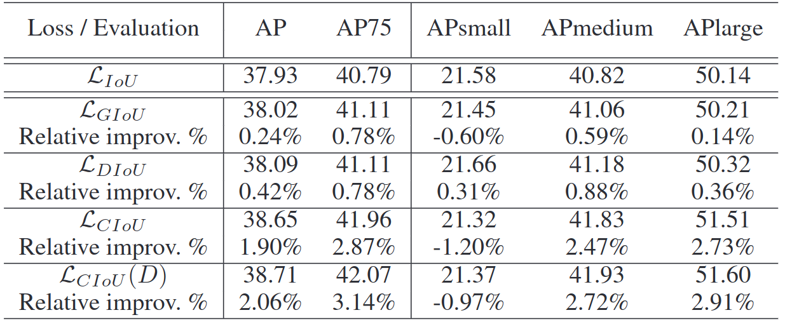

본 포스트에서는 YOLOv5의 Loss에 대해 살펴보겠습니다.
목차
정보 이론
-
Information
- 사건 A가 일어날 확률이 P(A)라고 할 때, 이 사건의 정보량은 $I=-\log P(A)$입니다.
- 예) 동전 던지기 앞면이 나오는 사건의 Information
- 확률: $ \displaystyle \frac{1}{2}$
- $I=-\log \displaystyle \frac{1}{2}$
-
Entropy
- Information의 기댓값입니다.
- $ H(X)=- \displaystyle \sum_{x}P(X) \log P(X)$
- 예) 동전 던지기의 Entropy
- $Entropy= \displaystyle{ -(\frac{1}{2} \times \log \frac{1}{2} + \frac{1}{2} \times \log \frac{1}{2})=-\log \frac{1}{2}}$
-
Kullback–Leibler divergence(KL Divergence)
- 두 확률 분포의 다른 정도를 측정하는 값입니다.
- $ D_{KL}(P \Vert Q)= \displaystyle \sum_{x}P(X) \log \frac{P(X)}{Q(X)} $
$ = -\displaystyle \sum_{x}P(X) \log Q(X) +\sum_{x} P(X) \log P(X)$
- 첫 번째 term은 확률 분포 P를 가지는 데이터에 대해, 확률 분포 Q를 사용하여 Information을 계산한 뒤, 이의 기댓값인 Entropy를 계산한 값입니다.
- 두 번째 term은 확률분포 P의 Entropy 값입니다.
- 즉, KL divergence는 확률 분포 Q로 Information 계산했을 때, 실제 P로 계산했을 때 보다 얼마나 더 많이 Information을 가지는지를 의미합니다.
-
Cross Entropy
- 위 KL divergence 식의 첫 번째 term, 즉 확률 분포 P를 가지는 데이터에 대해, 확률 분포 Q를 사용하여 Information을 계산한 뒤, 이의 기댓값인 Entropy를 계산한 값을 Cross Entropy라고 합니다.
- $ H(P, Q)= -\displaystyle \sum_{x}P(X)\log Q(X) $
- KL divergence는 아래와 같이 정리할 수 있습니다.
- $ D_{KL}(P \Vert Q)= H(P, Q) - H(P) $
- P가 실제 확률 분포이고, Q가 P를 근사한 모델이 만든 확률 분포라고 했을 때, H(P)는 변하지 않는 값입니다. 따라서, KL divergence에서 Cross Entropy H(P, Q)가 Model의 Loss로 자주 사용됩니다.
Binary Cross Entropy
- Cross Entropy Loss
- classification에서 data의 label y는 one-hot 벡터로 주어지는데, y가 위 Cross Entroy 식에서 확률분포 P가 됩니다.
- 모델의 output $\hat y$ 은 주로 softmax function으로 계산한 각 클래스일 확률인데, 위 식에서 확률분포 Q가 됩니다.
- N이 데이터 갯수, y가 label, C가 클래스 갯수일 때, Cross Entropy Loss L는 아래와 같이 계산합니다.
- $ L= - \displaystyle \sum_{n}^{N} \displaystyle \sum_{c}^{C}y_{n, c} \log \hat{y}_{n, c}$
- 이미지가 강아지, 고양이, 개구리 세 가지 클래스 중 어느 것인지 맞추는 classification 문제가 있다고 할 때,
- $y=\begin{bmatrix} 0 \cr 1 \cr 0 \end{bmatrix} $ (실제 label)
- $\hat y=\begin{bmatrix} 0.1 \cr 0.7 \cr 0.2 \end{bmatrix} $ (예측 값)
- 이 이미지에 대한 Cross Entropy Loss $l$ 은 아래와 같습니다.
- $ l= -\displaystyle \sum_{c}^{C}y_c\log \hat{y}_c$
$=0⋅\log 0.1 + 1⋅\log 0.7 + 0⋅\log 0.2$
$=\log 0.7$
- $ l= -\displaystyle \sum_{c}^{C}y_c\log \hat{y}_c$
- Binary Cross Entropy
- 클래스 갯수가 두 개일 때의 Cross Entropy Loss의 특별한 케이스입니다.
- 모델의 output $\hat y$은 주로 Sigmoid function으로 계산한 확률입니다.
- $ L= - \displaystyle \sum_{n}^{N} [y_n\log \hat{y}_n + (1-y_n)\log (1-\hat{y}_n)]$
- BCEWithLogitsLoss
- Torch에서는 Sigmoid layer와 Binary Crosss Entropy를 합친 BCEWithLogitsLoss 클래스를 제공하고 있습니다.
- log-sum-exp trick을 사용하여 Sigmoid layer와 BCELoss를 따로 사용하는 것보다 numerically stable합니다.
- x가 Sigmoid의 input, y가 label, N이 데이터 갯수, w가 weight라고 할 때, unreduced loss L는 아래와 같이 계산합니다.
- $ L=\begin{Bmatrix} l_{1}, \cr …, \cr l_{N} \end{Bmatrix}일 때, l_n= - w_n [(y_n\log \sigma (x_n)) + (1-y_n)\log (1-\sigma(x_n))]$
- reduced loss L는 아래와 같이 계산합니다.
- $ L=\begin{cases} mean(L), \text{if reduction=‘mean’} \cr sum(L), \text{if reduction= ‘sum’} \end{cases} $
- c가 class일 때, positive weight $p_c$를 사용하여 precision과 recall을 조절할 수 있습니다. 이 때, 식은 아래와 같이 바뀝니다.
- $ L_c=\begin{Bmatrix} l_{1,c}, \cr …, \cr l_{N, c} \end{Bmatrix}일 때, l_{n, c}= - w_{n,c} [(p_c ⋅ y_{n, c}\log \sigma (x_n)) + (1-y_{n, c})\log (1-\sigma(x_{n, c}))]$
- $p_c>1$이면 recall이 증가하고, $p_c<1$면 precision이 증가합니다.
- dataset에 하나의 클래스에 대해 100개의 positive example과 300의 negative example이 있다면 $p_c=\frac{300}{100}=3$이 되어야 합니다.
- torch.nn.BCEWithLogitsLoss(
weight=None,size_average=None,reduce=None,reduction=‘mean’,pos_weight=None)size_average,reduce는 deprecated된 parameter입니다.1 2 3 4 5 6target = torch.ones([10, 64], dtype=torch.float32) # 64 classes, batch size = 10 output = torch.full([10, 64], 1.5) # A prediction (logit) pos_weight = torch.ones([64]) # All weights are equal to 1 criterion = torch.nn.BCEWithLogitsLoss(pos_weight=pos_weight) criterion(output, target) # -log(sigmoid(1.5)) # tensor(0.20...)
IoU Loss
- Intersection over Union(IoU)
- scale invariant
- Convex A, B가 있을 때 IoU는 아래와 같이 계산됩니다.
- $ IoU= \displaystyle \frac{|A∩B|}{|A∪B|} $
- $L_{IoU}=1-IoU$
- IoU가 0인 경우, 즉 두 Object Detection에서 타겟 box와 예측 box가 겹치지 않은 경우, IoU는 오차의 정도가 어느 정도인지를 나타내지 않습니다. 따라서 Gradient Vanishing 문제가 발생합니다.
- Generalized-IoU(GIoU)
- Generalized Intersection Over Union: A Metric and a Loss for Bounding Box Regression
- A, B를 포함하는 가장 작은 convex를 C라고 할 때, GIoU는 아래와 같이 계산됩니다.
- $ GIoU=IoU- \displaystyle \frac{|C \backslash (A∪B)|}{|C|} $
- $ C \backslash (A∪B)$ 차집합을 의미합니다.
- $L_{GIoU}=1-GIoU$. 이 때, Loss 값의 범위는 0~2입니다.
- 타겟 box가 예측 box를 포함하고 있을 때, 페널티 텀이 0이 되어서 $L_{IoU}$ 값과 같은 값을 가지게 됩니다.

출처: Zheng, Zhaohui, et al. “Distance-IoU loss: Faster and better learning for bounding box regression.” Proceedings of the AAAI conference on artificial intelligence. Vol. 34. No. 07. 2020, Figure 2 - 수렴 속도가 느리고, box의 정확도가 비교적 낮습니다.
- Distance-IoU(DIoU) & Complete IoU(CIoU)
- Distance-IoU Loss: Faster and Better Learning for Bounding Box Regression
- 일반적으로 IoU 기반의 loss를 $L_{IoU}=1-IoU + \mathcal{R}(B, B^{gt})$로 정의할 수 있습니다.
- DIoU
- $ \mathcal{R}_{DIoU} = \displaystyle \frac{ρ^2(b, b^{gt})}{c^2}$. ρ는 두 box 중심 사이의 유클리디안 거리이고, c는 두 box를 포함하는 가장 작은 box의 대각 길이입니다.

출처: Zheng, Zhaohui, et al. “Distance-IoU loss: Faster and better learning for bounding box regression.” Proceedings of the AAAI conference on artificial intelligence. Vol. 34. No. 07. 2020, Figure 5 - $L_{DIoU}=1-IoU + \mathcal{R}_{DIoU}$. 이 때, Loss 값의 범위는 0~2입니다.
- 두 box 사이의 거리를 minimize하기 때문에 GIoU Loss보다 빠르게 수렴합니다.
- $ \mathcal{R}_{DIoU} = \displaystyle \frac{ρ^2(b, b^{gt})}{c^2}$. ρ는 두 box 중심 사이의 유클리디안 거리이고, c는 두 box를 포함하는 가장 작은 box의 대각 길이입니다.
- CIoU
- DIoU에 aspect ratio를 추가적으로 고려한 방법입니다.
- $ \mathcal{R}_{CIoU} = \displaystyle \frac{ρ^2(b, b^{gt})}{c^2} + \alpha v$
- $\alpha = \displaystyle \frac{v}{(1-IoU) + v}$
- non-overlapping한 경우 regression에 더 높은 priority를 가지게 합니다.
- $v = \displaystyle \frac{4}{\pi^2}(arctan\frac{w^{gt}}{h^{gt}} - arctan\frac{w}{h})^2$
- aspect ratio가 일치하는 정도를 측정합니다.
- $ \displaystyle \frac{4}{\pi^2}$는 arctan 최댓값이 $\frac{\pi}{2}$이기 때문에 계산 결과 최댓값을 1로 만들기 위해 사용됩니다.
- $\alpha = \displaystyle \frac{v}{(1-IoU) + v}$
- $L_{CIoU}=1-IoU + \mathcal{R}_{CIoU}$
- DIoU를 사용한 Non-Maximum Suppression(NMS)
- 기존의 NMS에서는 불필요한 detection box를 제거하는 데 IoU metric이 사용됩니다.
- IoU는 겹치는 영역만 고려하기 때문에, occlusion이 있는 경우 잘못된 box가 제거되기도 합니다.
- DIoU는 겹치는 영역과 함께 두 box의 중심 거리를 고려하기 때문에, occlusion이 있는 경우에 NMS에 더 적합한 criterion이 될 수 있습니다.
- 가장 높은 score를 가진 예측 box를 $\mathcal{M}$, NMS를 적용하는 다른 box를 $B$, classification score를 s, NMS threshold를 $\epsilon$라고 했을 때, DIoU-NMS는 아래와 같이 정의됩니다.
- $ s_i= \begin{cases} \displaystyle s_i, & IoU -\mathcal{R}(\mathcal{M}, B_i) < \epsilon \\ \displaystyle 0, & IoU -\mathcal{R}(\mathcal{M}, B_i) ≥ \epsilon \end{cases} $
- PASCAL VOC07+12로 학습한 YOLOv3 모델로 MS COCO 2017 데이터 중 하나를 detect한 예시입니다.

출처: Zheng, Zhaohui, et al. “Distance-IoU loss: Faster and better learning for bounding box regression.” Proceedings of the AAAI conference on artificial intelligence. Vol. 34. No. 07. 2020, Figure 8
- 실험 결과
- $ L_{IoU} $, $ L_{GIoU} $, $ L_{DIoU} $, $ L_{CIoU} $ 를 사용하여 YOLOv3 모델을 학습한 결과입니다. (D)는 NMS시 IoU-NMS를 사용한 것을 의미합니다.

출처: Zheng, Zhaohui, et al. “Distance-IoU loss: Faster and better learning for bounding box regression.” Proceedings of the AAAI conference on artificial intelligence. Vol. 34. No. 07. 2020, Table 1 - $ L_{IoU} $, $ L_{GIoU} $, $ L_{DIoU} $, $ L_{CIoU} $ 를 사용하여 SSD 모델을 학습한 결과입니다. (D)는 NMS시 IoU-NMS를 사용한 것을 의미합니다.

출처: Zheng, Zhaohui, et al. “Distance-IoU loss: Faster and better learning for bounding box regression.” Proceedings of the AAAI conference on artificial intelligence. Vol. 34. No. 07. 2020, Table 2 - $ L_{IoU} $, $ L_{GIoU} $, $ L_{DIoU} $, $ L_{CIoU} $ 를 사용하여 Faster-RCNN 모델을 학습한 결과입니다. (D)는 NMS시 IoU-NMS를 사용한 것을 의미합니다.

출처: Zheng, Zhaohui, et al. “Distance-IoU loss: Faster and better learning for bounding box regression.” Proceedings of the AAAI conference on artificial intelligence. Vol. 34. No. 07. 2020, Table 3
- $ L_{IoU} $, $ L_{GIoU} $, $ L_{DIoU} $, $ L_{CIoU} $ 를 사용하여 YOLOv3 모델을 학습한 결과입니다. (D)는 NMS시 IoU-NMS를 사용한 것을 의미합니다.
YOLOv5 Loss
-
Box Loss
pbox: (prediction 갯수, anchor 갯수)iou: (prediction 갯수)
1 2 3 4 5 6 7# Regression pxy = pxy.sigmoid() * 2 - 0.5 pwh = (pwh.sigmoid() * 2) ** 2 * anchors[i] pbox = torch.cat((pxy, pwh), 1) # predicted box iou = bbox_iou(pbox, tbox[i], CIoU=True).squeeze() # iou lbox += (1.0 - iou).mean() # iou loss -
Objectness Loss
- target box와 prediction box 사이의 IoU가 GT가 됩니다.
- scale마다 weight를 다르게 주어 Objectness Loss를 계산합니다.
- $ L_{obj}=4.0 ⋅L_{obj}^{small} +1.0 ⋅ L_{obj}^{medium} +0.4 ⋅ L_{obj}^{large}$
pi[..., 4]: (batch size, anchor 갯수, grid 갯수, grid 갯수) 모델이 예측한 objectness를 의미합니다.tobj: (batch size, anchor 갯수, grid 갯수, grid 갯수) 어떤 batch의 어떤 anchor의 어느 grid 위치에 해당되는 target objectness인지를 의미합니다.
1 2 3 4 5 6 7 8 9 10 11 12# Objectness # BCEobj = nn.BCEWithLogitsLoss(pos_weight=torch.tensor([h['obj_pw']], device=device)) iou = iou.detach().clamp(0).type(tobj.dtype) if self.sort_obj_iou: j = iou.argsort() b, a, gj, gi, iou = b[j], a[j], gj[j], gi[j], iou[j] if self.gr < 1: # default 1.0 iou = (1.0 - self.gr) + self.gr * iou tobj[b, a, gj, gi] = iou # iou ratio obji = self.BCEobj(pi[..., 4], tobj) lobj += obji * self.balance[i] # obj loss -
Classification Loss
t: (detection 갯수, class 갯수)
1 2 3 4 5 6 7# Classification # BCEcls = nn.BCEWithLogitsLoss(pos_weight=torch.tensor([h['cls_pw']], device=device)) if self.nc > 1: # cls loss (only if multiple classes) t = torch.full_like(pcls, self.cn, device=self.device) # targets t[range(n), tcls[i]] = self.cp lcls += self.BCEcls(pcls, t) # BCE -
Total Loss
- $Loss=\lambda_{box} L_{box} + \lambda_{obj} L_{obj} + \lambda_{cls} L_{cls}$
1 2 3 4 5 6lbox *= self.hyp['box'] lobj *= self.hyp['obj'] lcls *= self.hyp['cls'] bs = tobj.shape[0] # batch size return (lbox + lobj + lcls) * bs, torch.cat((lbox, lobj, lcls)).detach()